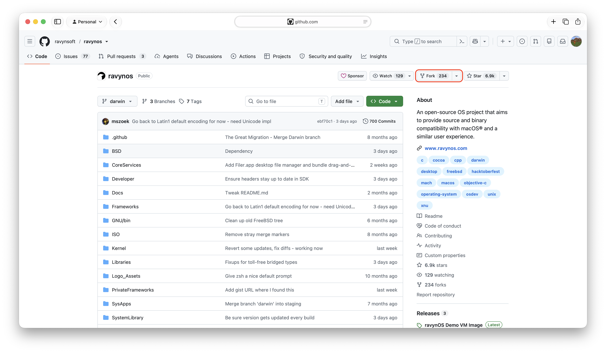
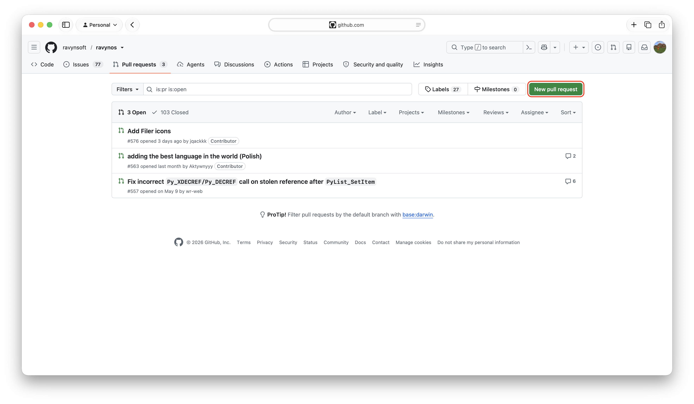
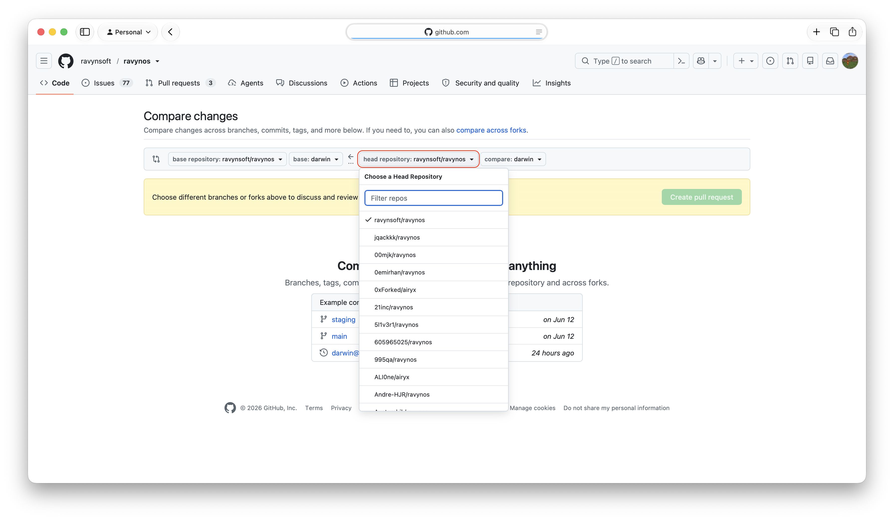

The cards below are quick links intended for your convenience, designed to help you start contributing to the rayvnOS wiki as fast as possible.
Contributing to the Wiki
Forking the Wiki
The first step of incorporating your changes into the ravynOS Wiki entails forking the website from GitHub. Doing this will provide you with a localised copy of the website, allowing you to implement your desired changes to the website. In the next few steps, you will learn how to submit your changes to the main repository.
Forking the Wiki (and subsequently the remainder of the guide) requires you:
- Have a GitHub account
- Have a working IDE/TextEditor
- Have access to a terminal
To begin, we'll navigate to the ravynOS Wiki Repository
Once on the repository page, press the Fork button.
The fork button is located on the top row near the Watch and Starred buttons.

Upon pressing fork, you'll be prompted to add a repository name/description, you can ignore and leave these as default and press the "Create Fork" button.
Finally, clone your fork from GitHub.
To do this, copy the URL of your forked repository in your browser, then open your terminal and type
git clone [FORK_URL]Setting up
Now that the Wiki has been forked, we can setup our developer environment to preview & debug our website. Setting up requires that you:
- Have a working npm installation
- Have either
pnpmoryarninstalled - Have your forked repository cloned and opened in your terminal
To setup your Wiki environment, we will run a command to download all of the dependencies needed for Wiki to run:
ℹ️
This may take a few minutes depending on your internet connection.
npm installNow that you have all NPM dependencies installed, we will run another command to open the Wiki in a live-server:
yarn devOnce your live-server has been initialized, you can freely incorporate your changes via your IDE/TextEditor and witness them changing in real-time with hot-reload.
Submitting your changes
Once you have successfully incorporated your modifications into your local copy and ensured the absence of any issues, we can proceed with implementing these changes into the main repository by submitting a pull request.
In order to do this, you must add your changes to push to your fork, here's a quick guide:
git add .
git commit -m "[DESCRIPTIVE COMMIT MESSAGE HERE]"
git push -u origin mainIf you visit your forked repository on GitHub, you should see your modifications.
To open a pull-request in the main repository, press the "Contribute" button, then press "Open Pull Request".

Upon pressing the button, you will be taken to a summary of your changes.
Give your pull-request an appropriate and descriptive title, alongside a description of your changes. Once done, you can press the "Create pull request" button to start the pull-request. (See below for visuals)

Once submitted, wait for somebody to review your changes, and eventually merge your changes. You will recieve notifications in the web-app (or mobile app if you have it installed) on any pull-request update.
System Architecture
ravynOS in general looks like macOS, with a few aspects of FreeBSD. It uses a custom EFI bootloader.
The core system is Darwin 19.6, equivalent to MacOS X 10.15.6 (Catalina). This consists of the XNU kernel, a set of kernel extensions (kexts) implementing kernel components and IOKit drivers, libSystem, and dyld.
Kernel Extensions are the primary way to add hardware support, file systems, and kernel capabilities in ravynOS, and should be written for IOKit. See the AHCI driver in /Kernel/Extensions/RavynAHCIPort for an example. Critical extensions are pre-linked with the kernel to create a kernelcache file, which is loaded by the EFI loader. The kernelcache may be compressed with LZVN, although it currently isn't when produced by plktool. After the system is up and a root filesystem is available, additional kexts can be loaded from disk.
We can currently boot in a QEMU Q.35 VM with OVMF EFI. More drivers are needed for real hardware.
Most core OS functionality for user processes is provided by libSystem, which is automatically linked to every executable by the compiler (clang). It includes the C runtime, libdispatch, liblaunch, libxpc, blocks runtime, name resolution, system info and notifications, malloc, math, threads, logging, and more. It does NOT include C++, which is LLVM's in /usr/lib/libc++, or Objective-C, which is Apple's objc4 at /usr/lib/libobjc.A.dylib.
Layer Cake
[ User Applications ]
[ Magma DE ]
[ WindowServer ][ daemons ]
[ CoreFoundation, Foundation, Cocoa, etc ]
[ --- launchd --- ]
[ libSystem ][ libc++ ][ libobjc ][ dyld ]
----------------------------------------
[ Kernel extensions: IOACPIFamily, ]
[ IOPCIFamily, IOStorageFamily, ]
[ IOGraphics, hfs, msdosfs, pthread, ]
[ corecrypto, etc ]
----------------------------------------
[ XNU - BSDKernel, Mach, IOKit ]We have this stack working up to CoreFoundation, with the exception of launchd currently being a simple stub.
System Files
Darwin lives in:
/usr/lib-dyld,libSystem.B.dylib,/usr/lib/system/*,libc++,libobjc.A, etc/System/Library/CoreServices/System/Library/Kernels/System/Library/Extensions/System/Library/Frameworks-System,Kernel,IOKitandDriverKitframeworks (with headers)
Some special directories are also used:
/dev(device files)/tmp(temporary files)
You can (and should) safely ignore these OS directories unless you are working on the base system.
Most of the system files provided by ravynOS live under /System/Library.
Frameworkscontains our CoreFoundation, CFNetwork, Foundation, CoreData, CoreText, CoreVideo, CoreGraphics, QuartzCore, LaunchServices, IOKit, and AppKit frameworks. Most of these have many stub functions that need to be implemented.FontsDesktop PicturesCoreServices
The command line BSD environment lives mainly in /bin, /sbin, /usr/bin, /etc, and /var. Certain macOS/ravynOS specific tools like open, plutil, etc are also here.
Applications
Applications in ravynOS should be packaged as AppBundles with the directory name ending in .app and stored in either /Applications or ~/Applications (although they can technically be stored or moved anywhere).
Some Applications here are provided with ravynOS and others may be installed by users. As on macOS, this is the primary place to find installed software.
Library
/Library is used for system-level or shared files that are not strictly "system" files, such as application-installed fonts and Java SDKs. Think of it roughly like a combination of /usr/lib and /usr/share. Each user has a personal Library folder in their home directory which is used to store per-user configuration, application support data, individual fonts, cached data, etc.
On ravynOS, each user has a LaunchServices database in ~/Library/db/launchservices.db. This database controls which applications are known, what types they can open, and which is used to open files.
This MIT knowledge base article has a good explanation of the multiple Library folders on macOS.
Users
As on macOS, ravynOS users have a home folder under /Users. The traditional Unix folders /usr/home and /home are not used.
Volumes
Any media detected by ravynOS will be mounted under /Volumes in a folder with the filesystem name or label, if it can be determined, and a generic name if not. Other mount points such as /media and /mnt should not be used by applications, but can be used for temporary mounts by developers or users.
Building ravynOS locally
While hacking on pieces you will need to build parts or all of the system locally. First, please see the System Architecture page. As of June 2026, ravynOS can be built on Ubuntu Linux 22.04 LTS and derivatives of it. It may also build on other Linux distros. You will need the current ravynOS SDK from our GitHub releases. You may optionally install the Linux host toolchain to save build time. The build process will first build the toolchain if it is not present. This can take several hours as it includes clang, tapi, and the rest of LLVM.
You will need several other packages and tools installed on your host Linux system:
CoreFoundation(CF-Lite), needed for some host toolsbmake, the BSD makebison(either GNU or BSD flavor)clang,clang++, andlld14.x - 17.x- LLVM's
libc++andlibc++abi libbsdto provide some missing essentials likekqueue()andstrlcpy()used in host toolslibxml2- Perl 5.x and Python 3.x (around 3.10 is ideal)
- Standard Unix CLI tools - cp, mv, awk, sed, rm, tar, etc
sudo, ideally configured to allow passwordless use for automated builds
Preparing to build
For best results, you should use a case-insensitive, case-preserving HFS+ volume for the source and binary trees. MacOS assumes case-insensitivity and some parts of the build may fail on other filesystems. Most Linux distros support HFS and have packages available for the required tools.
ravynOS uses the BSD make system and builds out of tree to an object directory. The object directory is normally ../build/${source root} - i.e. one level up from your source root with the name 'build' and containing objects with the name of their paths in the source tree. (There are a few exceptions to this pattern.)
Building the OS
To build the whole system incrementally (changed files only), change directory to the root of your ravynOS source tree and use the command:
sudo HOST_CC=/usr/bin/clang HOST_CXX=/usr/bin/clang++ bmake -m $(pwd)/BSD/share/mk -j8 world
Substitute an appropriate number of jobs equal to the number of CPUs you have available. e.g. if you want to use 4 cores, use -j4 instead of -j8.
The build process will iterate through Developer (developer tooling), Kernel (xnu, extensions, IOKit), Libraries (dyld, libobjc, libc++, libSystem and all its components), Frameworks (CoreFoundation, Foundation, Cocoa and Quartz APIs), BSD CLI subsystem, and the Magma desktop environment (WindowServer, Dock, SystemUIServer, LoginWindow). As of June 2026, the system will build up to CoreFoundation and Foundation.
Creating a bootable VM image
Making and booting a VM image requires QEMU and its tools, the output of "Building the OS" above, and the EFI loader. You can build the EFI loader or use one of the released versions from our GitHub.
You need to create a disk image the first time you do this. It can just be updated afterwards. To create the initial image:
qemu-img create -f raw disk.img 4Gfdisk disk.img- initialize the disk as GPT and create two partitions. The first is a 512MB EFI System partition and the second is a 3.5GB HFS+ partition. Save changes and exit.sudo losetup -P loop0 disk.img- create a virtual disk for the imagesudo mkfs.msdos -n EFI /dev/loop0p1sudo mkfs.hfsplus -v "ravynOS HD" /dev/loop0p2
Once you have an image, you can mount it any time for updates by using losetup -P loop0 disk.img followed by mount /dev/loop0p1 /mnt or mount /dev/loop0p2 /mnt. (Substitute paths as needed. You may also want to specify uid=$(id -u) to make it writable without sudo.)
With the EFI partition mounted (we'll use /mnt here), use these commands to update or create the contents. Substitute the appropriate paths to your EFI loader (loader.efi), kernelcache, and plist.
mkdir -p /mnt/EFI/BOOT /mnt/EFI/ravynOScp -f loader.efi /mnt/EFI/BOOT/BOOTX64.EFIcp -f kernelcache /mnt/EFI/ravynOS/kernelcachecp -f com.ravynos.boot.plist /mnt/EFI/ravynOS/com.ravynos.boot.plistsudo umount /mnt
Now you need to create the HFS+ root volume where userspace lives. We will use /mnt again for this. You can use any empty directory. SDKROOT should contain the path to your ravynOS.sdk bundle.
sudo mount /dev/loop0p2 /mntmkdir -p /mnt/usr; cp -fR $SDKROOT/usr/lib /mnt/usrmkdir -p /mnt/System/Librarycp -fR $SDKROOT/System/Library/Frameworks $SDKROOT/System/Library/CoreServices /mnt/System/Library/mkdir -p /mnt/private/etc /mnt/private/tmp /mnt/private/var/db /mnt/private/var/vmln -sf private/etc /mnt/etc; ln -sf private/tmp /mnt/tmp; ln -sf private/var /mnt/var
Finally, we need something at /sbin/launchd for the kernel to load. Although we do have launchd, it is not yet part of the build output and we'll use a little C stub until it's ready. Compile the code below with clang --sysroot=$SDKROOT -mmacos-version-min=10.15 -o /mnt/sbin/launchd launchd_stub.c after writing it to launchd_stub.c.
#include <stdio.h>
#include <stdlib.h>
#include <fcntl.h>
#include <unistd.h>
#include <sys/wait.h>
int main(int argc, char **argv)
{
int wstatus = 0;
close(0);
close(1);
close(2);
open("/dev/console", O_RDONLY);
open("/dev/console", O_WRONLY);
open("/dev/console", O_WRONLY);
printf("Hello from fake /sbin/launchd!\n");
/* Do stuff here, like fork() other processes */
printf("Waiting on children");
while(1) { // init can't exit.
waitpid(-1, &wstatus, WNOHANG);
sleep(1);
}
return 0;
} Unmount your disk image and clear the loopback device: sudo umount /mnt; sudo losetup -D
That's it! You now should have a bootable disk image for ravynOS 0.7.0! It doesn't do much yet, but it should boot to the fake launchd in a console.
Here is a working QEMU command line:
qemu-system-x86_64 -m 4G -M q35 -s -accel kvm \
-cpu Skylake-Server-v5,+vmware-cpuid-freq,+invtsc \
-smp 4,cores=4,sockets=1 \
-device qemu-xhci,id=xhci -device usb-kbd,bus=xhci.0 -device usb-tablet,bus=xhci.0 \
-device isa-applesmc,osk="ourhardworkbythesewordsguardedpleasedontsteal(c)AppleComputerInc" \
-drive if=pflash,format=raw,file=/usr/share/OVMF/OVMF_CODE.fd,read-only=true \
-drive if=pflash,format=raw,file=$HOME/OVMF_VARS.fd \
-drive if=ide,id=disk0,file=$HOME/disk.img,format=raw \
-smbios type=2 -device virtio-rng-pci,rng=rng0 \
-object rng-random,id=rng0,filename=/dev/urandom \
-serial file:serial.log \
-netdev user,id=net0,hostfwd=udp::41139-:41139 \
-device virtio-net-pci,netdev=net0,id=net0,mac=52:54:00:c9:18:27 \
-device vmware-svgaApp Bundles
An Application Bundle is a folder with a specific structure that is interpreted by the file manager (Finder) as an executable file. It is intended to contain an application complete with all its supporting resources such that the whole application can be moved or deleted by moving or deleting the bundle folder, and can be run from any location.
ravynOS bundles are identical to macOS bundles with one exception: the Contents/OS/ folder name. Applications built for ravynOS have a ravynOS folder. Mac applications have a MacOS folder. ravynOS will execute either bundle.
Many applications are written using Objective-C/C++ to take advantage of Cocoa frameworks. While this is preferred, apps can be written in Swift as well. As of right now, some apps written in other langauges may not run or operate correctly. The minimum requirements are as follows.
- Implement the minimum Bundle directory structure.
Firefox.app
├── Contents
│ ├── ravynOS (or MacOS)
│ │ └── Firefox
│ ├── Info.plist
│ └── Resources
│ └── firefox.icns
├── Firefox -> Contents/ravynOS/Firefox
└── Resources -> Contents/ResourcesThere are few rules about what goes into Resources. Essentially it should be anything your app needs to run, and your app should know how to locate these resources relative to its runtime location. Apps should never use paths to fixed resource locations like /usr/lib/myapplication/libfoo.so; instead they should use NSBundle, CFBundle or an equivalent to determine their location then construct a path into the Resources folder.
- Include an icon in Resources in either
.icnsor.pngformat and reference it fromInfo.plist - Include an
Info.plistin the Contents folder which has at least these mandatory keys:- CFBundleExecutable
- CFBundleIconFile
- CFBundleIdentifier
- CFBundleName
- CFBundlePackageType with value
APPL - CFBundleShortVersionString
- CFBundleSignature with a 4-letter code representing your application or
OBJCif you don't have one - NSPrincipalClass with your application's main class or
NSApplicationif it doesn't use Objective-C
You should include the CFBundleDocumentTypes dictionary as well if you want LaunchServices to know what kinds of files your application can open or to define new file types.
Other considerations
All apps should follow the ravynOS' Human Interface Guidelines (HIG) as much as possible. You must implement the standard key bindings and menu structures for any new application. Applications being ported or packaged should make a best effort to follow these.
New applications must include an application menu titled with the app's name. This is the menu seen just to the right of the Apple logo on macOS applications. It contains standard items such as About, Preferences, Quit. This menu is created automatically for Cocoa applications using AppKit.
Menus are automatically placed into the global menu bar for applications using Cocoa. RavynOS uses the standard Cocoa NSMenu system, compatible with macOS. Cocoa applications that implement an NSMenu will automatically have it appear in the global menu bar when the application becomes active. It is expected that other toolkit and language bindings (e.g. Qt, GTK) that support macOS could be supported on ravynOS as well.
Building Apps
Because ravynOS aims for source and binary compatibility with macOS, its development model heavily mirrors standard macOS application development.
Frameworks and Languages
The system provides an implementation of Cocoa and the Objective-C runtime in /System/Library/Frameworks. Developers are highly encouraged to use Objective-C or C++ to leverage these frameworks. While applications can theoretically be written in other languages, native integrations work best with Objective-C/C++.
ravynOS aims to provide familiar macOS APIs such as LaunchServices, Grand Central Dispatch (GCD), and XPC for inter-process communication.
Tooling and Environment
- Building: The system uses
bmake(BSD make) alongside standard Unix tools. Some compatibility with Xcode projects is provided via thexcbuildtool. - Environment: It is not currently possible to build apps natively on ravynOS yet. We recommend building your applications on macOS X High Sierra or later, or on a system which can properly run and evaluate Objective-C applications.
Clean Room Implementation
ravynOS is an open-source clean room project. When developing applications or contributing to system frameworks, ensure that you rely strictly on publicly available documentation. Do not incorporate proprietary or decompiled Apple code into your projects.
Examples
For reference implementations of native apps, check out the ravynOS source code repository. The built-in applications (like Terminal.app or Filer.app) serve as excellent examples for how to structure, build, and package your own projects.
Roadmap
Conceptually, we are building an OS that exports the macOS APIs to developers/apps and looks and feels similar. It is not intended to be a clone of macOS. Rather, it is a new OS that is heavily inspired by Apple's tech stack and app guidelines, and aims to have some binary and source compatibility to leverage the existing ecosystem of X86 Mac software. It is aimed mainly at Unix lovers and power users who want the freedom of open-source without completely giving up the Apple feel and compatibility.
Initially, we built large parts of the system with FreeBSD, X11/KDE, and DBus. For example, DBus was used to communicate NSMenus to the global menu bar using the dbus-menu protocol. SQLite is used to implement the LaunchServices database. Some desktop components were implemented with Qt and Plasma. This unfortunately fell short of my design goals and has been abandoned.
The current approach is to write the core system using the same or similar technology as macOS itself. The entire X11/KDE UI system was dropped along with FreeBSD kernel and libraries. We are now based on Darwin with our own bootloader. Everything builds as Mach-O dylibs and executables. LibSystem is there, as are frameworks, app bundles, and what a Mac user would expect. Key differences include use of bmake over gmake (but gmake is there), the BSD make system in /usr/share/mk to simplify building of bundles, an updated userland derived mainly from FreeBSD, and removal of many Apple constraints.
The end result will be something that behaves and looks very close to a Mac computer that can build & run applications written for macOS. Not every feature will be implemented, but the goal is to have enough that some typical applications will work.
Below are some of the current and future areas of work.
Major Work Areas and Technologies
Foundational libraries and frameworks
While our libSystem is fairly complete, there are still many functions not implemented (or only as a stub to satisfy the linker). The same goes for frameworks such as CoreFoundation, Foundation, CoreText, CoreData, etc. They all need to be audited and brought up to date against the MacOS 10.15 APIs.
BSD userspace
Typical Unix command line utilities such as cp, mv, tar, rm, sh, zsh, etc and useful CLI tools such as open, plutil, defaults and so on need to be built and installed to the sysroot. We have the source of these but they are not yet converted to the new build system.
Many additional libraries will be needed as well.
launchd
We have the source of an older version of launchd that supports XPC. This was used in the FreeBSD-based versions of ravynOS and needs to be ported (back) to Darwin. There is also launchctl to be done, and it should be extended to support XML plists as well as the JSON ones it understands today.
Swift 6.x
We want to get the Swift runtime going ASAP since so much software is now written in it vs ObjC. We have successfully run a compiled Swift Embedded "hello world" binary on ravynOS already. (This is a Swift executable built on macOS to include its runtime functions and only rely on libSystem and dyld.)
WindowServer & The Magma Desktop Environment
WindowServer is a ground-up implementation of the desktop UI. It currently consists of a display server and desktop shell written in Objective-C using AppKit and CoreGraphics (Quartz) components. A reasonable implementation of Quartz exists in CGDirectDisplay and is backed by WindowServer via AppKit (transparently). This needs to be ported from FreeBSD to use the new ravynOS GOP framebuffer, and eventually to Metal/Vulkan/DRM-KMS/something accelerated.
Magma is our version of a desktop environment - the equivalent of Aqua. It consists of the menu bar (SystemUIServer, part of WindowServer) as well as the Dock and Filer components and UI controls. Dock manages the system wallpaper, and Filer is responsible for putting icons on the desktop. UI controls are implemented primarily in AppKit, Onyx2D, QuartzCore and CoreGraphics frameworks. Lots of work needed here - Dock is very rudimentary, and Filer does not exist at all yet.
- Writing Menu Extras interface and components like volume, displays, notifications, etc
- Creating the System Preferences application and a loader for preference pane bundles
- Implementing missing pieces of AppKit (target is macOS 10.15)
- Modernizing the look & feel of AppKit components (target is macOS 10.15-ish)
Applications
All of these need to be sourced or written.
- a decent Terminal app
- basic text editor (TextEdit)
- decent IDE such as CodeEdit
- a web browser: Firefox, Amethyst, Ladybird? We're not aiming for Safari clones here, just a fast, secure, privacy-respecting, standards-compliant browser.
Filer
The equivalent of the Mac Finder and our file manager. Previous incarnations of the system used "Filer" from helloSystem with some additions/changes. We no longer use this since it is based on X11/Qt, and a new app based on pure Cocoa (AppKit, LaunchServices, etc) is needed.
DMG
The DMG disk image format is the de-facto way to distribute Mac software. Some open-source implementations of DMG exist, such as dmg2img and darling-dmg using FUSE. However, we need a solution that supports reading and writing images and is not under the GPL. It also needs to mount the image on /Volumes with an appropriate name from its filesystem or partition label. This should be implemented as a framework or dylib so it is reusable.
Project Wish List
Must have features
- Swift runtime
- Being able to move files in and out of zip files without decompressing and recompressing
- Always on top windows
- Window snapping
- Multiple desktops
- Launchpad-like app launcher
- use all cores
- change the system font
- change the menu bar size without needing to change the system resolution first
- optional focus follows mouse
- change my mouse button order
- read files from MTP devices
- Column View in Filer
- "About This Computer" Window with basic Informations about the computer and -> "System Report" Button which lists all possible information about the computer.
- Disk Utility
- When previewing images, use the arrow keys to jump to the next/previous image.
- Activity display
- Network Utility
- Preserve user files during new installation and updates
Potential third-party features
GitHub
Developer Preview releases are available from our GitHub page and sometimes from Discussions threads.
Please note these are unfinished, unstable work intended for developers of the system.
Design Guidelines
Consistent design is fundamental to the ravynOS user experience. Adhere to these guidelines to maintain visual clarity and a cohesive, familiar interface across your apps.
Please select a topic from the sidebar to view the specific guidelines.
Color System: Light Mode
Light Mode in ravynOS uses a carefully calibrated color palette. Colors are intentionally muted to provide a comfortable viewing experience, yet vibrant enough to ensure clear contrast and distinct visual hierarchy.
Core System & Accent Colors
| Name | Hex Code | Use Case |
|---|---|---|
sys-blue | #007AFF | Links, active focus, accent |
sys-purple | #AF52DE | Media controls |
sys-pink | #FF007F | Suggestions |
sys-red | #FF3B30 | Destructive actions |
sys-orange | #FF9500 | Warnings, updates |
sys-yellow | #FFCC00 | Warnings, drive statuses |
sys-green | #34C759 | Success states, battery |
sys-gray | #8E8E93 | Neutral icons, inactive states |
Semantic Text & Typography
| Name | Hex Code | Use Case |
|---|---|---|
text-primary | #000000 | Regular text, headings, body |
text-secondary | #3C3C43 | Subtitles, secondary text |
text-tertiary | #78787D | Disabled text, timestamps |
text-quaternary | #B4B4B8 | Very subtle text, watermarks |
text-link | #006B85 | Hyperlinks, interactive text |
text-inverse | #FFFFFF | Text on top of sys-accent |
Structural Backgrounds & Surfaces
| Name | Hex Code | Use Case |
|---|---|---|
bg-window-base | #ECECEC | Root window |
bg-content | #FFFFFF | Main context areas |
bg-sidebar | #F2F2F7 | Sidebars, navigation panes |
bg-grouped-base | #F2F2F7 | Groupings |
bg-grouped-item | #FFFFFF | Items within a grouping |
bg-toolbar-opaque | #F6F6F6 | Fallback for window headers |
bg-menu-flyout | #F5F5F5 | Right-click menus |
Interactive Controls & UI Elements
| Name | Hex Code | Use Case |
|---|---|---|
control-bg-default | #FFFFFF | Push buttons, dropdowns |
control-bg-hover | #F0F0F0 | Hover state for controls |
control-bg-disabled | #E5E5EA | Unclickable/locked objects |
control-track | #D1D1D6 | Slider/Scrollbar backgrounds |
control-thumb | #8E8E93 | Slider/Scrollbar Handles |
focus-ring | #80BDFF | Navigation focus outlines |
border-window | #C6C6C8 | Outer stroke of windows |
separator-standard | #E5E5EA | Dividers, toolbar borders |
separator-subtle | #F2F2F7 | Soft item dividers |
border-control | #D1D1D6 | Stroke for text inputs/buttons |
Color System: Dark Mode
Dark Mode uses colors intentionally adapted to reduce eye strain in low-light environments, yet remain vibrant enough to ensure clear contrast.
Core System & Accent Colors
| Name | Hex Code | Use Case |
|---|---|---|
sys-blue | #0A84FF | Links, active focus, accent |
sys-purple | #BF5AF2 | Media controls |
sys-pink | #FF3399 | Suggestions |
sys-red | #FF453A | Destructive actions |
sys-orange | #FF9F0A | Warnings, updates |
sys-yellow | #FFD60A | Warnings, drive statuses |
sys-green | #30D158 | Success states, battery |
sys-gray | #98989D | Neutral icons, inactive states |
Semantic Text & Typography
| Name | Hex Code | Use Case |
|---|---|---|
text-primary | #FFFFFF | Regular text, headings, body |
text-secondary | #EBEBF5 | Subtitles, secondary text |
text-tertiary | #EBEBF5 | Disabled text, timestamps |
text-quaternary | #EBEBF5 | Very subtle text, watermarks |
text-link | #419CFF | Hyperlinks, interactive text |
text-accent | #000000 | Text on top of sys-accent |
Structural Backgrounds & Surfaces
| Name | Hex Code | Use Case |
|---|---|---|
bg-window-base | #1E1E1E | Root window |
bg-content | #121212 | Main context areas |
bg-sidebar | #1C1C1E | Sidebars, navigation panes |
bg-grouped-base | #000000 | Groupings |
bg-grouped-item | #1C1C1E | Items within a grouping |
bg-toolbar-opaque | #2D2D2D | Fallback for window headers |
bg-menu-flyout | #252525 | Right-click menus |
Interactive Controls & UI Elements
| Name | Hex Code | Use Case |
|---|---|---|
control-bg-default | #3A3A3C | Push buttons, dropdowns |
control-bg-hover | #444446 | Hover state for controls |
control-bg-disabled | #2C2C2E | Unclickable/locked objects |
control-track | #3A3A3C | Slider/Scrollbar backgrounds |
control-thumb | #636366 | Slider/Scrollbar Handles |
focus-ring | #05448A | Navigation focus outlines |
border-window | #000000 | Outer stroke of windows |
separator-standard | #38383A | Dividers, toolbar borders |
separator-subtle | #2C2C2E | Soft item dividers |
border-control | #545456 | Stroke for text inputs/buttons |
Typography
Typography in ravynOS is designed with a singular focus: absolute clarity. Readability and consistency are prioritized above all else.
Font Families
| Font Family | Use Case |
|---|---|
| Inter | Font for all system apps and services |
| URW Bookman | Font for documents and plain text |
| Source Code Pro | Font for the terminal and code |
Font Weights - System
| Weight | Use Case |
|---|---|
| Extralight | Subtext, descriptions |
| Light | Body text |
| Medium | Sections, subheadings |
| Semibold | Headings |
| Bold | Titles |
Font Weights - Document
| Weight | Use Case |
|---|---|
| Light | Default font for document text |
| Demi | Default font for headings and titles |
| Light Italic | Default font for links and references |
Font Weights - Code
| Weight | Use Case |
|---|---|
Extralight | Code descriptions |
Light | Terminal output |
Medium | Alternative terminal output |
Semibold | Code snippet headings |
Bold | Code snippet titles |
Grids & Spacing
Consistent spacing is fundamental to the ravynOS user experience.
| Metric | Value |
|---|---|
| Standard Margins | 20 Points |
| Minimum Touch Target | 44x44 Points |
| Grid Layouts | 3-5 Points |
| Tight Spacing | 4 Points |
| Standard Spacing | 8 Points |
| Group Spacing | 12-16 Points |
Layout & Structure: Window Anatomy
A standard ravynOS window consists of a frame and a body area. The frame typically sits above the body and can include window controls and a toolbar.
- The Frame: Contains standard system controls like close and resize buttons, and often integrates a toolbar.
- The Body: The core area where your app's unique content and navigation reside.
- The Sidebar: Where all of your app-level navigation should be. Do not put more than 1 line of text here.
General Do's and Don'ts
- Do keep your frame consistent, yet unique to your app. Do not rotate the close, maximize, and minimize buttons by 90º to make them vertical.
- Do keep the body of your window a size that will not constrain the contents of your app.
- Do ensure your sidebar is resizable and has sections and labels unique to your content. Do not make your sidebar the main function of your app or add images.
Responsiveness
- Points (PT) over Pixels (PX): Ensures your content scales well across standard (@1x), Retina (@2x), and Super Retina (@3x) displays.
- Resizability: A general starting point for compatibility is 960x600, and it should be able to go up to 2560x1600.
- Safe Areas: Ensure your app has safe areas (e.g. near the sidebar or window borders) so items don't overlap.